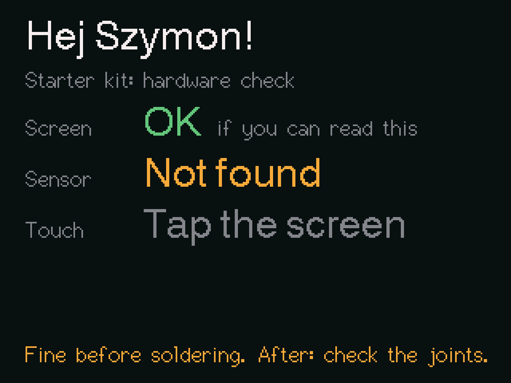

Option 1 · Recommended
Write your own software with Claude
Claude Code knows this board: the pins, the screen, the sensor and how to flash it. You say what you want, Claude writes the code, flashes it and reads the board's log.
- Install Claude Code. It needs a paid Claude plan.
macOS and Linux:
curl -fsSL https://claude.ai/install.sh | bashWindows, in PowerShell:
irm https://claude.ai/install.ps1 | iexOther ways, and the desktop app: code.claude.com/docs/en/setup
- Get the starter kit and start Claude in it:
git clone https://github.com/remustoma/bobr-air cd bobr-air claude - Connect the board and say:
Flash the starter and check my hardware.
